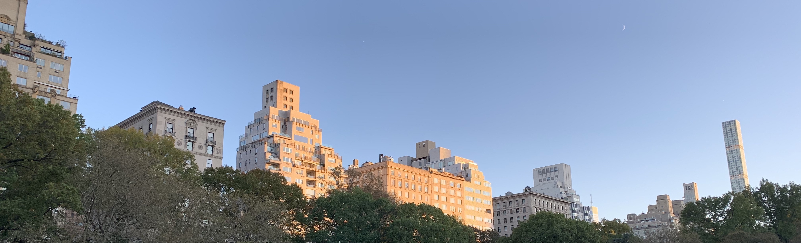

Iris's Blog
Iris's Blog

A glimpse in Central Park...See article
 Halloween in New York City
Halloween in New York CityNew York City comprises 5 boroughs sitting where the Hudson River meets the Atlantic Ocean. At its core is Manhattan, a densely populated borough that’s among the world’s major commercial, financial and cultural centers. Its iconic sites include skyscrapers such as the Empire State Building and sprawling Central Park. Broadway theater is staged in neon-lit Times Square.
New York City traces its origins to a trading post founded by colonists from the Dutch Republic in 1624 on Lower Manhattan; the post was named New Amsterdam in 1626.[22] The city and its surroundings came under English control in 1664[22] and were renamed New York after King Charles II of England granted the lands to his brother, the Duke of York.[23] New York was the capital of the United States from 1785 until 1790,[24] and has been the largest U.S. city since 1790.[25] The Statue of Liberty greeted millions of immigrants as they came to the U.S. by ship in the late 19th and early 20th centuries[26] and is a symbol of the U.S. and its ideals of liberty and peace.[27] In the 21st century, New York has emerged as a global node of creativity and entrepreneurship[28] and environmental sustainability,[29][30] and as a symbol of freedom and cultural diversity.[31] In 2019, New York was voted the greatest city in the world per a survey of over 30,000 people from 48 cities worldwide, citing its cultural diversity.[32]
It's Halloween! How could we miss the parade in the busiest city in the world! This year the Halloween parade took place in Greenwich Village. Everyone put up their costumes in the spooky season. Even us at the very last minute, we were running between the neighbourhood and trying to find the paints and decorations from the dollar stores. Night life in New York City is incomparable. The city is lightened up and everyone is celebrating Halloween. Disney princesses and the Smurfs are walking on the street. Zombies and ghosts are hiding in the bars and waiting for the night to begin. It is a night of singing and dancing. Westlight is a rooftop bar located in Williamsburg, Brooklyn where you can see the skyline of NYC and enjoy the classic cocktails and wine.
Come to Timeour Market in Brooklyn and try out local stores!